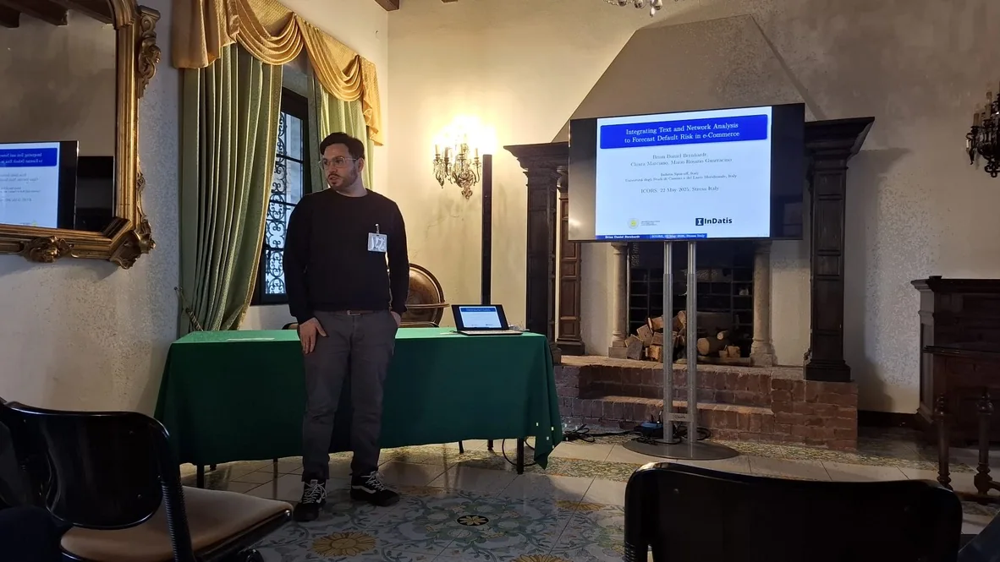

Brian Daniel Bernhardt
Brian Daniel BernhardtBrian Daniel Bernhardt.
I work at the intersection of statistical learning, explainable AI, and network science, developing quantitative methods to understand performance, risk, and resilience in economic systems.
Research focus
Methodological research with applications to business, finance, trade networks, and economic decision-making.
Statistical learning & AI
Interpretable machine learning, predictive modelling, causal inference, and risk assessment for organizations and public systems.
Network science
Graph neural networks, weighted bipartite structures, centrality, assortativity, and structural fragility.
Applied economics
Applications spanning SME credit risk, sustainability, international trade, public finance, and business analytics.
From methods to applications
Quota-based pivotality in bipartite networks
A simulation framework examining how network structure and weight distributions affect structural pivotality.
Slack analysis in global trade networks
Reproducible analysis of quota-based slack and structural dependence using international trade networks.
Network robustness dashboard
An interactive Streamlit dashboard for weighted, directed network robustness experiments.
Making complex data useful for real-world decisions.
I’m a PhD researcher in Economics and Management for Innovation and Sustainability at the University of Cassino and Southern Lazio. My work brings together machine learning, causal inference, and network-based methods to study firm performance, credit risk, sustainability, and systemic fragility.
Before my doctoral research, I earned an MSc in Global Economy and Business (110/110 cum laude). My collaborations and research stays include the University of Leeds, Universidad Abierta Interamericana in Argentina, and InDatis.
Experience and academic background ↗Across conferences and collaborations
 Leeds
2026Explainable graph neural networks
Leeds
2026Explainable graph neural networks
 Villa
Mondragone 2026Trade network fragility
Villa
Mondragone 2026Trade network fragility
Interested in collaborating?
I’m open to conversations about quantitative research and applied data science.